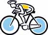
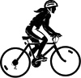

Get Your Bike Ready
Is your bike ready for the ride? Should you use a particular bike for the century? You don't need to go out and buy a $2000 bike (or even a $500 road bike) to ride a century. A century REALLY can be comfortably ridden on a mountain bike or a hybrid. Slick narrow tires are available for 26 inch wheels. I wouldn't recommend using 2 inch knobbies on a century, but I'd ride a mountain bike with 1.25 inch slicks without a second thought. I would also probably add some sort of bar ends to increase hand positions if I only had flat bars.
Now to get the bike ready. Make sure the tires are in good shape and inflated to full pressure. Check the brakes to see that they are properly lined up and work as expected. (Are the quick releases closed?) Make sure your shifting is working smoothly. Adjust indexing if necessary. See FAQ for more details on these adjustments.
Is every bolt tight? Check the water bottle cages, rack, fenders, handlebars, pedals, etc. While doing this make notes about what tools, especially sizes, you need to work on the bike.
Check the bottom bracket, headset and wheels. Grab the pedals and try to move them side to side. If you detect motion, your bottom bracket might be loose. Holding the front brake on, try to move the handlebars. If you feel motion, your headset may be loose. Spin the wheel and watch the rim relative to a brake pad, does it stay the same distance from the rim? If not, your wheels are out of true.
Check your spare tube. Will it hold air. Some tubes, fresh out of the box may be defective. Check the tube of glue in your patch kit. If it has been opened, it may be all dried up. It's no fun to be on the side of the road with a flat, a tube that won't hold air and a patch kit with no glue.
Training Tips for the Tour
You may already be ready to ride 100 miles or you may have a long way to go. First you should look at your weekly mileage. Do you even know how much you ride each week. Keeping a log or a riding diary can be invaluable. I use monthly calendars and write in each days total. I can then keep a tally for the week and month. There are special training diaries available if you want to keep track of more info, like route, speed, temperature, moods, heart rate, etc. Looking back at logs over the years can also help you to gauge improvements or changes.
If you are riding less than 100 miles per week, increase that mileage gradually to at least this level in the weeks prior to the event, riding at least 30 during the week, and 70 on the weekend. Of course, if you can do more, then do more! Sample training schedule. There are many people who beleive that you can ride far less than this and still complete the ride. Riders who can't find time during the week can do moderate length rides on weekends and still have hopes of completing a century. I have certainly had my share of times when I only could ride on weekends and did just fine. But ideally one should try to get out a couple of times during the week to keep the muscles loose and in shape.
The more you ride before the century, the less pain you are likely to experience during and after the ride. TIME in the saddle is an important consideration. Getting used to spending the day with the bike will help!
It is entirely possible to go out and *ride* a century with next to no miles in your legs, if you are determined enough. I have a mailbox full of testemonials to prove it. But you may want to give your bike away at the end of the ride :)
Try to increase the length of your longest ride toward the century mark gradually. Don't increase your longest ride from 25 miles to 70 in one week. But do try to do at least a 70 mile ride prior to doing the century. Your pace on the 70 mile ride should be a good indication of your pace on the century.
Find hills and ride them, especially if you hate hills and don't think you are very good at them. Even if you are doing a *Flatter than a Pancake Century*, riding hills will make you stronger. For tips on getter stronger on hills. Get your friends involved. It is always more fun to ride with others, so try to find people to ride with. Make plans to ride with others and stick to it. It's much harder to NOT go riding if someone is expecting you. The ride will go faster if you have someone to talk to AND you can help each other by drafting when it's windy.
Training Nutrition
You will need to eat A LOT on the ride. If you are doing an organized ride, they may have rest/food stops with food and water. Check ahead to find out what kind of food they will have and how frequent the stops are.
Food offered might be fruit, especially bananas and apples, cookies, peanut butter and jelly sandwiches, peanut butter crackers, fig bars, and bagels. Some rides will have sports drinks like Gatorade or Exceed. You may have to depend on stores or carry a lot of your own.
The above list is a good list of things to put in your jersey pockets or in a handlebar bag if the ride is not supported. (Jerseys (with pockets along the back) are great for carrying food.) High sugared candies may give you a temporary boost, but they will also let you down soon after.
Eat before you are hungry and drink before you are thirsty. Carry at least two water bottles, and refill them regularly. Getting dehydrated is one of the most common problems on long rides.
And just let me repeat this for emphasis. Eat Before You Are Hungry And Drink Before You Are Thirsty!